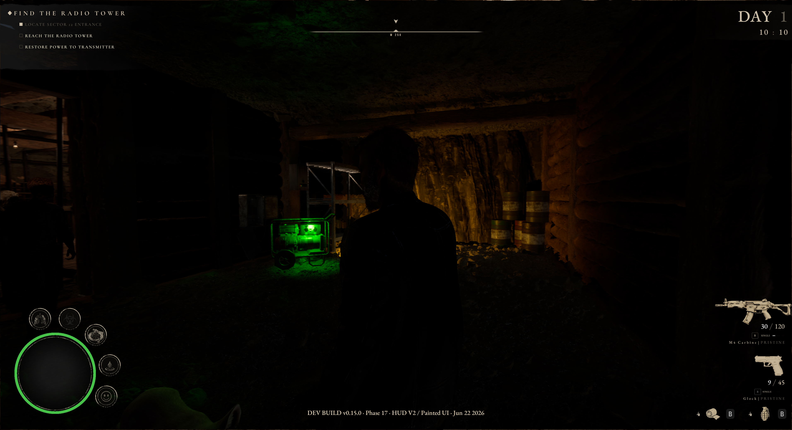
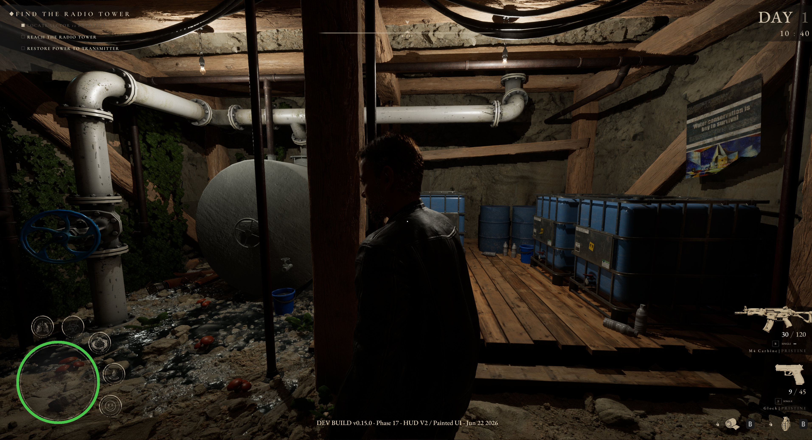
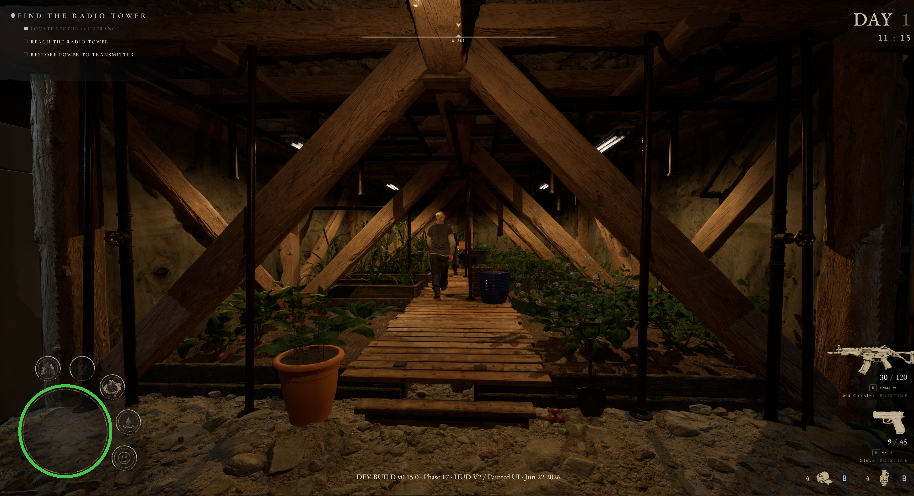
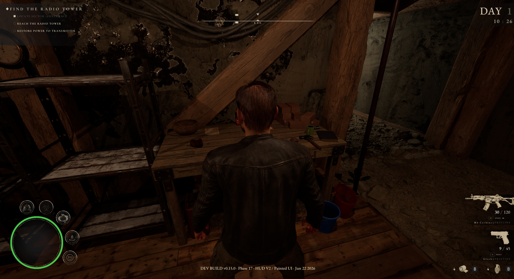
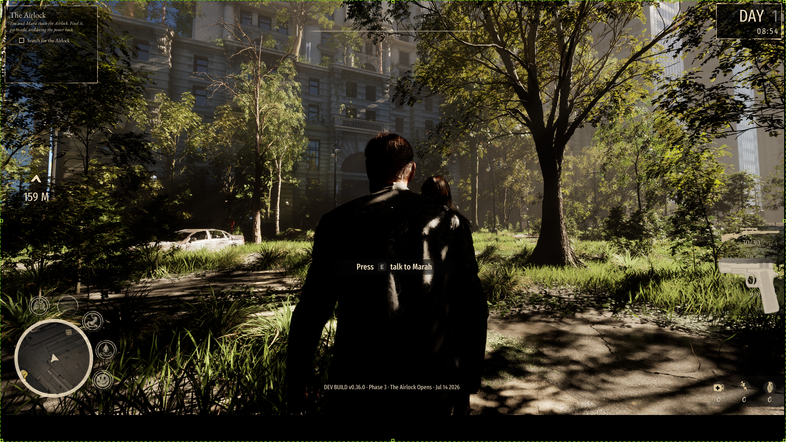
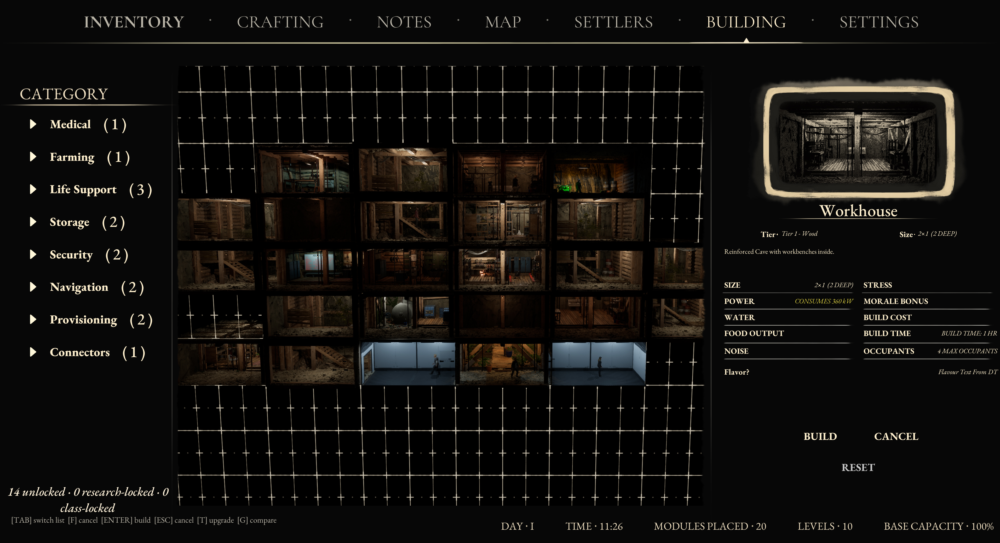

Explore
01Head out across an overgrown world reclaimed by nature. Scavenge the ruins, piece together what happened, and weigh every risk. Daylight keeps you safe, but it never lasts.

A post-apocalyptic survival base-builder. Rescue survivors from the ruins, dig your shelter room by room beneath them, and keep the lights on when the Altered come.
Head out across an overgrown world reclaimed by nature. Scavenge the ruins, piece together what happened, and weigh every risk. Daylight keeps you safe, but it never lasts.
Survivors are scattered and scared. Track them down, earn their trust, and bring them home. Each arrives with their own skills, history, and reasons to stay.
Dig in and design your shelter room by room, planned from above like a dollhouse. Power, water, food, defences and morale all hang on how well you build.
When the sun goes down, the Altered come. Hold the line, ration what little you have, and make the hard calls. Every night you survive is another story your shelter carries.
Not a feature list. Every system below is implemented and playable in the current build.

Generators run on fuel you scavenge. Overload the grid and the lights start to go. Lose power and the doors, pumps and grow lights die with it.
Shipped
Pump, filter and ration. Thirst kills as quietly as the Altered, and a settler who is not fed does not stay hopeful for long.
New · August
Seven crop stages on a real clock, grow lights on a twelve hour cycle, and a watering can you carry by hand. Cut the power and the plants know.
New · August
Assign survivors to the rooms that suit them. A mechanic repairs the generator himself. A herbalist tends the beds. Their skills change what your shelter can do.
Shipped
An open, overgrown city with a working compass, distance markers and a map that fills in as you chart it. Everything out there is a risk you chose.
New · August
Fourteen modules across life support, storage, security, navigation and provisioning. Place, upgrade, move and remove, all from the cutaway view.
ShippedAirlock is being built in the open, by one person, at night. Follow the signal.
Concept proven. The idea that worked.
Core systems online. Lore, audio and art locked.
Playable demo, 20+ missions, start to finish. Power, water, food, farming, ammo and the compass all live.
Publisher conversations and funding. Talking to several now.
Full content build. More survivors, more surface, deeper base.
The demo runs start to finish. If you are a publisher, the press kit and pitch deck are below. If you are a player, the wishlist is the thing that helps most.